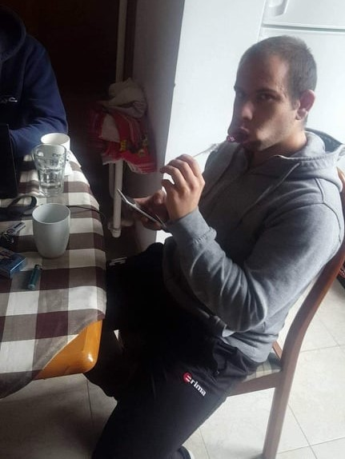

Services
We love improving your security
FHS provides variety of security services. The hands-on approach with web application and network penetration testing are the most effective for our customers. Testing new features or whole infrastructure the hardening benefits are amazing. When your team needs to evaluate new functionality or existing one we can join in for thread modelling sessions, where we can provide the point of view of a hacker.


The Team
We love to break stuff
We are a small team of three individuals, each profficient in penetration testing and a specific domain like networking, web applications, services, operating systems etc. We work with one customer at a time providing our full attention. This approach gives most effective results. We are graded with several certifications like CEH, OSCP, OSWE etc.
Lyubo
Milcho
Gordon